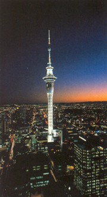
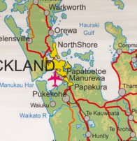

 Imagine an urban environment where, within 30 minutes, you can be relaxing on a beautiful beach, hiking in lush native bush or exploring an enchanted island.
Auckland is New Zealand’s premier convention and incentive destination with a diverse range of hotels, venues, attractions and touring options.
Most visitors to New Zealand enter via Auckland, touching down at Auckland International Airport - a 30 minute taxi ride from the central city.
Auckland International Airport is serviced by most of the world’s major international airlines including Air New Zealand, Qantas Airways, Japan Airways, Singapore Airlines, Garuda Indonesia, Malaysian Airlines, Cathay Pacific, Thai Airways International, Air Pacific, EVA, Polynesian Airlines, Korean Airlines, Solomon Airlines, Royal Tongan Airlines and Aerolineas Argentinas.
Auckland is a city of more than one million residents and is unique in many ways. It rests among a string of 48 dormant volcanoes and between three harbours - the Waitemata, the Manukau and the Kaipara, and Aucklanders love to take advantage of this bounty of water.
While Auckland is New Zealand’s largest city, it also offers plenty of opportunities to leave the city behind and discover the natural wonders. Bush reserves are found throughout the city and just 45 minutes from downtown Auckland are the Waitakere Ranges, an area of native forest criss-crossed with walking tracks and home to a wide range of unique flora and fauna.
|

Click for a map of Auckland |
Among the most popular islands to visit are Waiheke, Rangitoto, Kawau and Great Barrier islands. A number of other Hauraki Gulf islands are sanctuaries for New Zealand wildlife and offer opportunities for visitors to experience New Zealand as it may have been before human habitation.
Sea kayaking is a popular way to experience the Waitemata Harbour. Experience is not needed and even first time kayakers are amazed at the ease with which they can explore mangroves, island caves and beaches. For a truly unforgettable experience, watch the sunset from your kayak while paddling by moonlight with a qualified guide.
With so much to do on the water, it’s easy to see why Auckland has been dubbed the ‘City of Sails’. Auckland’s passion for sailing was evident when the city played host to the 2000 and 2003 America’s Cup regattas and the city is a popular stopover during the Round the World yacht race.
The city abounds with modern shopping complexes that are open seven-days-a-week and offer the best in local and international fashion and food.
Auckland is also a haven for music lovers and the compact CBD boasts the widest range of vibrant entertainment venues in the country. An array of top performance centres operate seven days a week making it possible to sample different music and entertainment styles at any time of the day or night. Whether it’s blues, jazz, country or rap, you’ll find something to get your toes tapping in Auckland.
For more relaxing pursuits, why not kick off your shoes and take a stroll along one of the many golden sand beaches lining Auckland’s coastline, enjoy a leisurely bike ride or roller blade around the waterfront, or take a stroll through the Auckland Domain.
Auckland is the world’s largest Polynesian city. These cultures and others from around the globe blend harmoniously in this cosmopolitan city. The multitude of cultures is reflected in restaurant menus as well as in art, fashion and music.
Auckland has the people and the places to make your convention not only magical, but memorable!